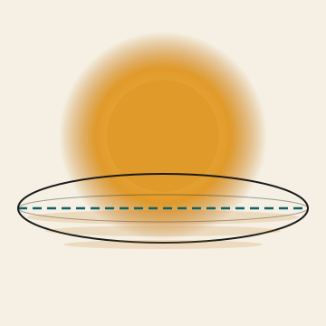
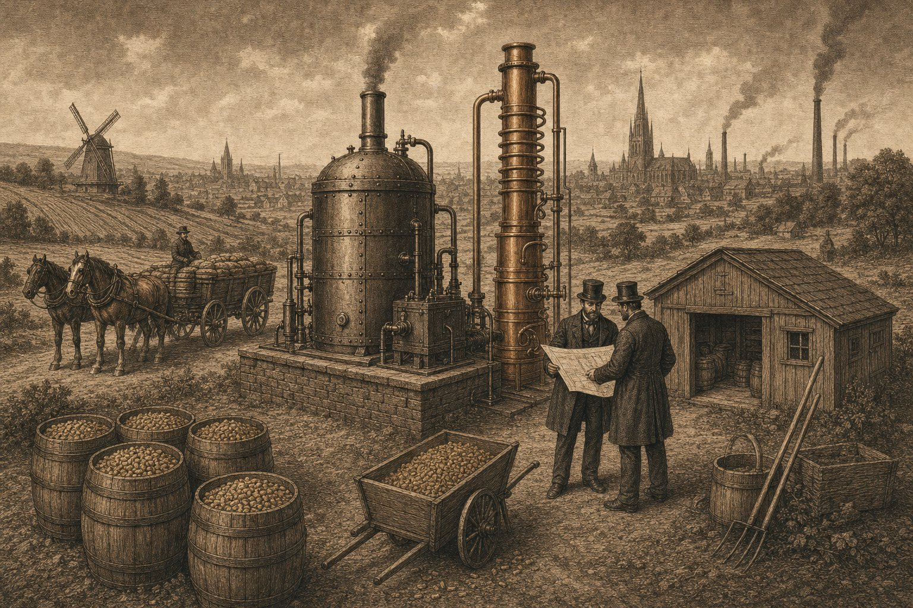
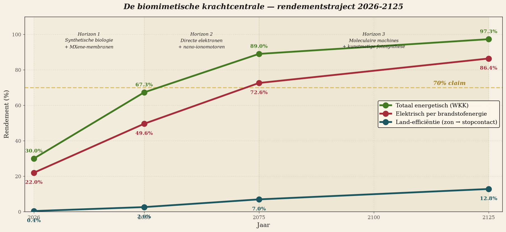
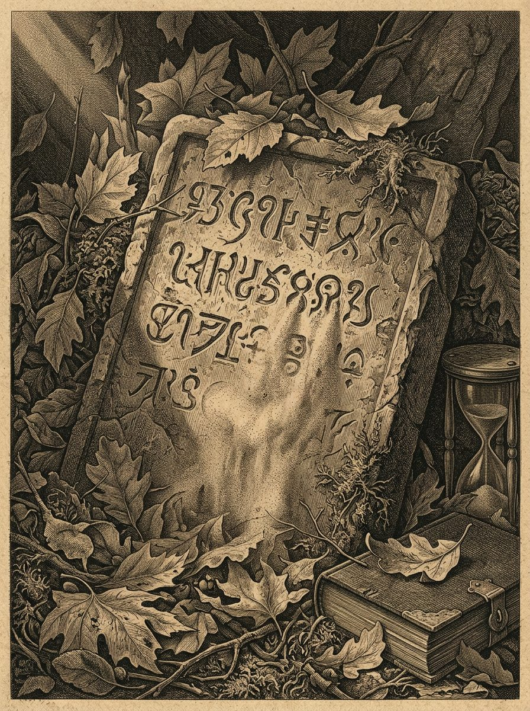
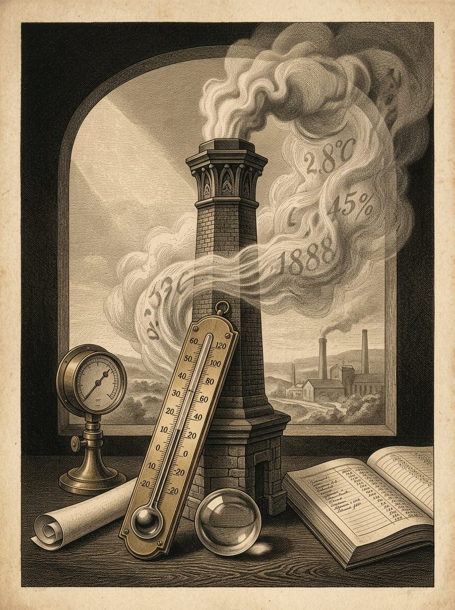

Edizione Clima · 2026
Edizione Clima
Energia · Mobilità · Riscaldamento · Alimentazione · Migrazione · Rimozione della CO₂
Un’ampia edizione tematica sulla scelta climatica che oggi l’Europa si trova davanti. Non un solo tema tecnico. Non un solo dibattito politico. Ma l’intero terreno sul quale si decide se manterremo le redini in mano o se viaggeremo come parte dipendente al seguito di altri.
Il trittico centrale
In cabina di guida o sul portabagagli
Tre documenti, un solo messaggio. La filiera Carbon-Alert senza un solo centesimo di sussidi — come modello guida per l’intera scelta climatica europea.
1 — Articolo guida
In cabina di guida o sul portabagagli
Tre blocchi, quattro fondamenti, l’intero confronto. Chi aspetta, tra poco si ritroverà in fondo.
2 — Progetto tecnico
Visione 2036 — Hub energetico Carbon-Alert
100 kW modulari, LCOE 9,97 c€/kWh, tempo di ammortamento di 3 anni — senza sussidi.
3 — L’appello
Lettera aperta ai governi d’Europa
350.000 posti di lavoro, 9 miliardi di euro, indipendenza energetica — senza bisogno di denaro.
Capitolo 1
Energia senza paraocchi
Tutte le forme di energia per i trasporti e il riscaldamento messe a confronto — senza un solo centesimo di sussidi. Una sola strada vince con un ordine di grandezza.

Ricerca & analisi
I trenta centesimi che l’Europa fa fruttare
Il bioetanolo raggiunge 0,30 € al litro nel 2036, senza sussidi. Il confronto complessivo di tutte le forme di energia — elettrica, idrogeno, fossile, etanolo, pompa di calore.

Visionario
Le persone che costruiscono insieme
Città tropicali dell’etanolo nel 2040. Non respingere, non trattenere — andare oltre. Case dignitose, scuole, biblioteche, internet. Una via d’uscita che serve entrambe le parti.

Whitepaper · R&S
La centrale biomimetica
Tre orizzonti — 2050, 2075, 2125. Oltre Carnot in 25 anni. Oltre il 70% elettrico in 50 anni. Oltre la pianta stessa in 100 anni.
Capitolo 2
Il veleno silenzioso — ciò che non abbiamo visto
Microplastiche, polveri degli pneumatici, meccanismo anti-immunitario. Ciò che è rimasto sotto il nostro radar, mentre guardavamo la CO₂.

Ambiente & salute
Lo pneumatico è la nuova sigaretta
Le microplastiche degli pneumatici sono oggi ciò che era il tabacco nel 1965: riconosciute, onnipresenti e silenziosamente letali. Chi osserva oggi vede la prossima class action di domani.

Critica delle politiche
La malattia anti-immunitaria di Bruxelles
Come la politica climatica europea compromette la propria immunità industriale — attaccando le cellule produttive invece di proteggerle.
Capitolo 3
L’ordine dimenticato — Edizione 5
Otto articoli su ciò che la politica climatica trascura quando ignora l’ordine naturale. Metano, piante, fusione nucleare e i sette strumenti di una Terra in equilibrio.

Edizione completa
L’ordine dimenticato
Otto articoli — lettera, strumenti, formula del successo, ordine dimenticato, metano, pianta, i sette di Berna, dissidenti, richiesta al lettore.

Edizione 5 · articolo 04
L’inganno del metano
Come un gas naturale del ciclo si è trasformato in una calamità — e chi ne trae vantaggio.
Edizione 5 · articolo 05
La pianta che si trasferisce
Che cosa ci insegna una pianta che si trasferisce sull’adattamento climatico — e su come la Terra stessa viaggi attorno al proprio verde.
Capitolo 4
BiCRS — Catturare la CO₂ dall’aria
Biomass with Carbon Removal and Storage. L’unico strumento nel 2040 a essere a emissioni nette negative, senza dipendenza politica.

Mappa delle conseguenze · versione BiCRS
La Mappa delle conseguenze di Bruxelles — BiCRS
Come una scelta climatica europea a favore di BiCRS fa pendere la Mappa delle conseguenze — da Saccheggio alla ricostruzione al ribasso.
Manifesto
Uccidono le loro arterie vitali — Bruxelles
Come Bruxelles recide le arterie dell’economia europea, in nome di una politica climatica che, senza quelle arterie, non dispone più di risorse.
Perché Edizione Clima?
Perché il dibattito sul clima in Europa gira in tondo da anni. Sussidi contro sussidi. Politica contro politica. Divieti contro ordini. Ciò che il dibattito non fa mai: presentare l’intero campo di gioco con onestà, senza tenere artificialmente basso il prezzo visibile delle preferenze politiche.
Edizione Clima lo fa. In ogni pagina compare la stessa base di calcolo: niente SDE++, niente crediti ETS, niente bonus RED, niente esenzione BPM, niente feed-in. Solo ciò che sta in piedi con le proprie gambe, sul piano tecnologico ed economico. Più il lato umano: chi costruisce, chi paga, chi trae vantaggio.
Esplorate tutti i capitoli qui sopra. Leggete soprattutto il trittico centrale in alto. E, dopo la lettura, ponetevi una sola domanda: tra poco l’Europa sarà sul sedile del cocchiere — o sul portapacchi?